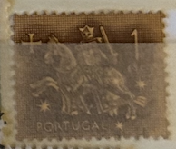
| SOURCE | TITLE| IMAGE MATCH | click to source page |
| eBay | Portugal 1953-56 sello ecuestre del rey Diniz | eBay | 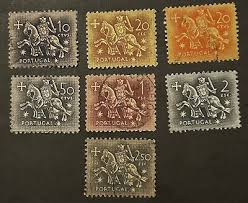 |
| HipStamp | Portugal 1953 SG#1089 2.50esc Black Mounted Knight FU | Europe - Portugal & Colonies, General Issue Stamp / HipStamp | 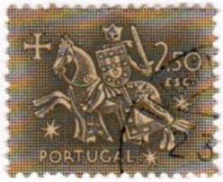 |
| 610 ideias de Filatelia Portuguesa | selos, selos postais, selo nacional | 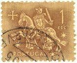 | |
| eBay | Portugal Scott# 771, Seal of King Diniz 2.50 Esc. 1953-56 MNH | eBay | 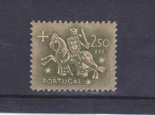 |
| Acervo de Selos | Acervo de Selos | Filatelia, Selos e História Postal | 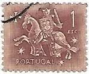 |
| eBay | Horses Portuguese & Colonies Stamps for sale | eBay | 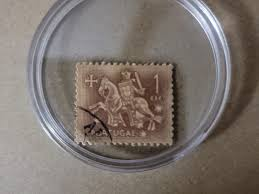 |
| Etsy | Stamp Art, Purple, Knight on Horse, 5 Escudo, Portugal, Used Stamps - Etsy | 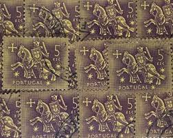 |
| PicClick FR | PORTUGAL -1953 STAMPS - chevalier - cheval - militaire - neuf** EUR 1,15 - PicClick FR | 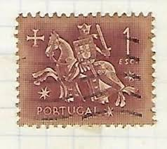 |
| Portugal, Postage Stamp, 1953-1956 | 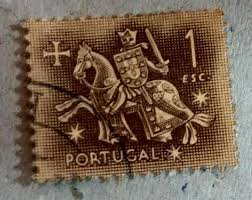 | |
| Colnect | Portugal : Stamps [Theme: Knights | Currency: $ - Portuguese escudo] [1/3] : Colnect 📮 | 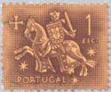 |
| eBay | Portugal Stamp - Knight on Horseback | eBay | 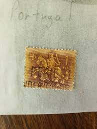 |
| nuevoportal.com | Andando por España | 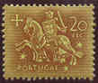 |
| Bob Shop | Portugal & Colonies - 1953 Macau - Honeysuckle 1 A mint, hinged was listed for 3.60 on 15 Oct at 11:16 by KHB56 in Johannesburg (ID:654749328) | 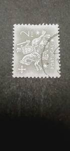 |
| Portugal Postage Stamp by Flaps Vectors & Illustrations with Unlimited Downloads - Yayimages | 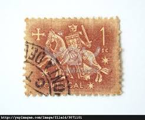 | |
| Cecil Cannon (alabamaslamma1109) - Profile | Pinterest | 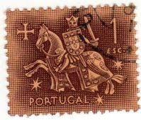 | |
| Custo Justo | Quadra De Selos Novos De 20 Reis - D. Manuel Ii - Portugal - 1910 | Antiguidades e Colecções, à venda | Lisboa | 35325203 | CustoJusto.pt | 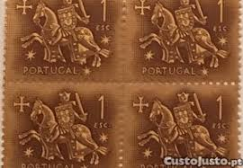 |
| Todocolección | portugal. sello usado, año 1953. 1 escudo. tema - Comprar Selos antigos de Portugal no todocoleccion | 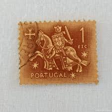 |
| carousell.ph | 1953 10ESC PORTUGAL KNIGHT SEAL OF KING DINIS #PT762 - RARE, Hobbies & Toys, Memorabilia & Collectibles, Stamps & Prints on Carousell | 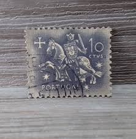 |
| eBay | Portugal - Block of 4 MNH stamps of 2$50 - Rei D. Dinis - 1953 | eBay | 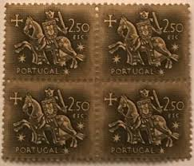 |
| jetpatcher.com | Unmounted Mint Never Hinged Portugal Block 26 (Complete.Issue.) Unmounted Mint/Never Hinged ** MNH 1979 NATO (Stamps For Collectors) Military/Knight Mint Never Hinged MNH Stamps | 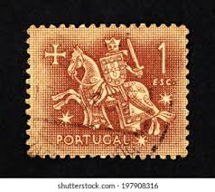 |
| eBay | Portugal and Colonies Art, Artists Stamps for sale | eBay | 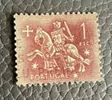 |
| eCRATER | Portugal Postage Stamp Scott #PT 616 Used 10 Escudo Caravel (15th Cty) | 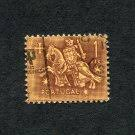 |
| Bob Shop | Portugal & Colonies - 1953 Portugal - Templar Knights 10 CTVS used, stamped was listed for 3.60 on 4 Dec at 15:32 by KHB56 in Johannesburg (ID:659722039) | 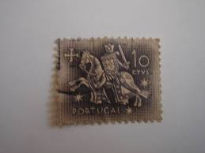 |
| Shutterstock | Portugal Circa 1953 Cancelled Postage Stamp Stock Photo 2032349051 | Shutterstock | 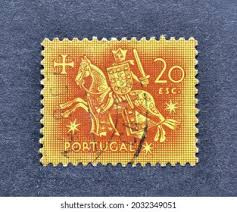 |
| HipStamp | PORTUGAL 1953 - Scott# 773-4 King Seal 10-20e NH | Europe - Portugal & Colonies, General Issue Stamp / HipStamp | 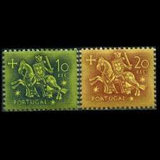 |
| eBay | VINTAGE RARE PORTUGAL 1 ESC STAMP KNIGHT CHEVALIER STAMPS | eBay | 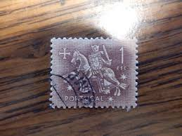 |
| Dreamstime.com | 602 Portugal Postage Stamp Stock Photos - Free & Royalty-Free Stock Photos from Dreamstime | 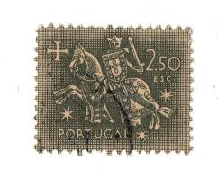 |
| eBay UK | Portugal 1953-71 SG#1081, 20c Medieval Knight Used #E96366 | eBay UK | 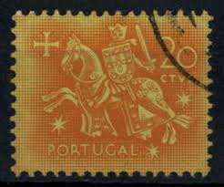 |
| eBay | Black Postage Stamps for sale | eBay | 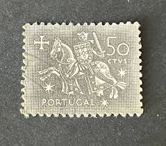 |
| HipStamp | PORTUGAL; 1953 early definitive issue fine MINT MNH Unmounted 5E. value | Europe - Portugal & Colonies, Stamp / HipStamp | 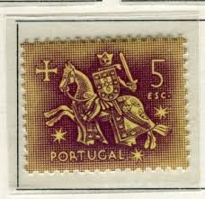 |
| HipStamp | Portugal 764 VFU N326-4 | Europe - Portugal & Colonies, General Issue Stamp / HipStamp | 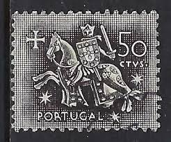 |
| eBay | PORTUGAL 766 - Equestrian Seal of King Dinz (pf19177) | eBay | 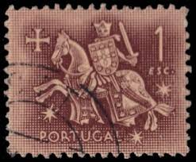 |
| 18 Stamps of Portugal ideas to save today | postal stamps, stamp collecting, postage stamps and more | 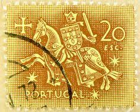 | |
| esam.ir | بلوک تمبر پرتغال | 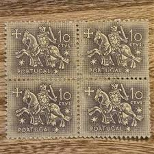 |
| Bigstock | Juan De Onate, Spanish Image & Photo (Free Trial) | Bigstock | 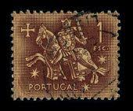 |
| Libano 1948 23:48 7 X 164 1640... o... アイシルントン TYee TrMI 4נלטב | 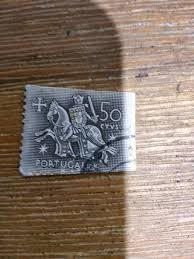 | |
| Colnect | Portugal : Selos [Tema: Cavaleiros | Unidade monetária: $ - Escudo português] [1/3] : Colnect 📮 | 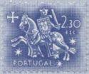 |
| eBay | PORTUGAL LOT 9 STAMPS 1952-53 S 726+S753-54+S757+S766+S769+S778+S782-83 USED | eBay | 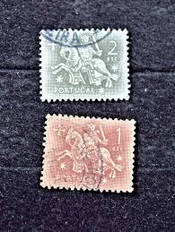 |
| www.medtacglobal.org | ST-1}: 1953 Portugal 20 CTVS Postage Stamp | 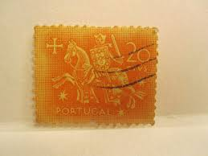 |
| PicClick DE | BRIEFMARKE PORTUGAL 1,50 ESC EUR 4,00 - PicClick DE | 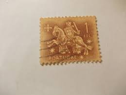 |
| HipStamp | Portugal 766 (used) 1e knight, violet brn (1953) | Europe - Portugal & Colonies, General Issue Stamp / HipStamp | 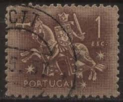 |
| eBay | Gray Portuguese & Colonies Stamps for sale | eBay | 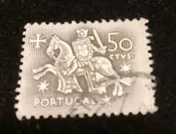 |
| Todocolección | portugal & marcofilia, justicia de fafe, algés - Buy Antique stamps of Portugal on todocoleccion | 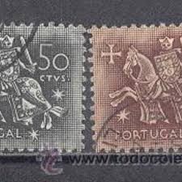 |
| Custo Justo | Quadra De Selos Novos De 5 Reis - D. Manuel Ii - Portugal - 1910 | Antiguidades e Colecções, à venda | Lisboa | 35325193 | CustoJusto.pt | 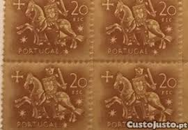 |
| ebid.net | Portugal 1953 Knight on Horseback King Diniz 1.50Esc Used Stamp. on eBid United Kingdom | 193330809 | 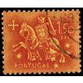 |
| Bob Shop | Portugal & Colonies - 1953 Portugal - Templar Knights 50 CTVS, 1.00,1.50,2.00,2.50,5.00 ESC used, stamped was listed for 14.40 on 18 Jan at 15:31 by KHB56 in Johannesburg (ID:632067080) | 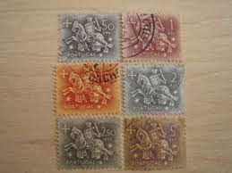 |
| eBay | Portugal . Scott's 774. MLH. Equestrian Seal King Diniz sal's stamp store. | eBay | 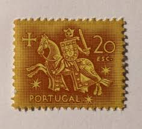 |
| Carousell Malaysia | PORTUGAL USED STAMP : Knight on Hirseback ( From Seal of Kung Dinus ) 1 escudo 1953, Hobbies & Toys, Collectibles & Memorabilia, Stamps & Prints on Carousell | 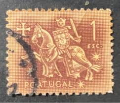 |
| Alamy | Stamp postage portugal hi-res stock photography and images - Alamy | 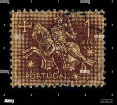 |
| eBay | Portuguese Multi-Color Postage Stamps for sale | eBay | |
| eBay | Portugal . Scott's 765. MLH. Equestrian Seal King Diniz sal's stamp store. | eBay | |
| eBay | 28 Portugal Cancelled Postage Stamps KNIGHT ON HORSEBACK Paper Crafts | eBay | |
| Shutterstock | Portugal Circa 1950 Stamp Printed Portugal Stock Photo 78296338 | Shutterstock | |
| Fandom | Portugal 1953 Definitives - Medieval Knight | JPP-Stamps Wiki | Fandom | |
| Todocolección | fila portugal 1968 af-1037 yvert 1047 madeira l - Buy Antique stamps of Portugal on todocoleccion | |
| PicClick IT | PORTOGALLO - SIGILLO di Re Diniz - 20 CTVS - 1 ESC - 2,50 ESC - Lotto di 3 usati - anni '50 EUR 5,16 - PicClick IT | |
| Bob Shop | Portugal & Colonies - 1952 - Portugal - 1Esc - The 400th Anniversary of the Death of the Holy Francisco Xavier, The 3rd An was listed for 0.00 on 16 Jul at 20:01 by Mantique in Pretoria / Tshwane (ID:646834542) | |
| Etsy | Stamp Art, White/black, Knight on Horse, 50 Centavos, Portugal, Used Stamps - Etsy | |
| Alamy | Postage stamp from Portugal in the Equestrian Seal of King Diniz series issued in 1953 Stock Photo - Alamy | |
| Hello to all! I am new here, need to learn and gather knowledge! I have found some stamps that my father left me, and I believe some were left to him by |